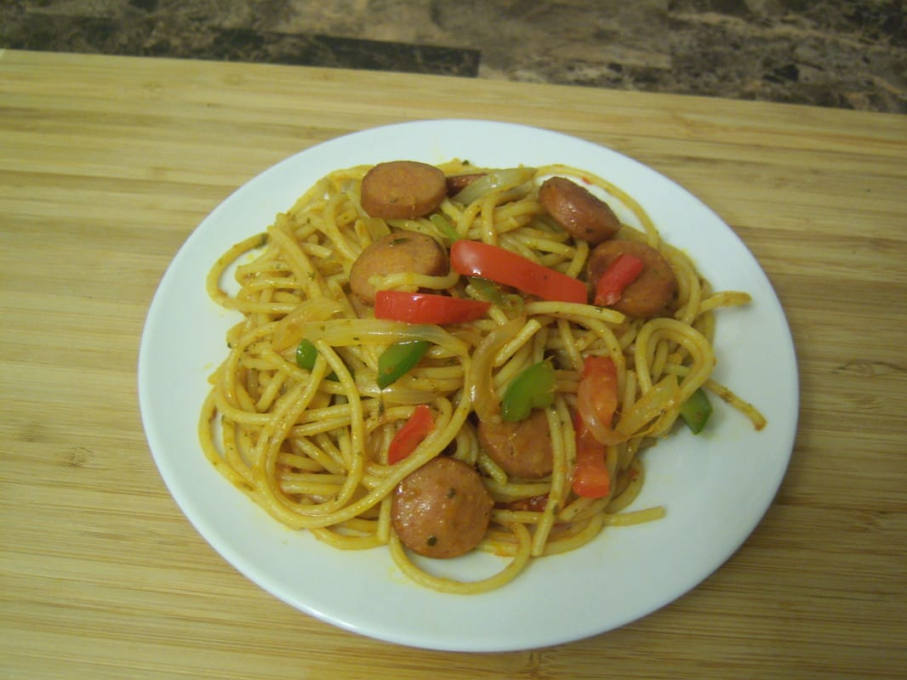

Haitian Spaghetti

Ingredients
- 1 pkg(16oz) spaghetti
- 4 - 6 hotdogs
- 1 Onion, sliced
- 1/2 green pepper, sliced
- 1/2 red pepper, sliced
- 3 - 4 table spoons, Epis
- 1 chicken maggie cube
- 1/2 table spoon adobo
- 1/2 tsp. Garlic Powder
- 1/4 cup Extra Virgin Olive Oil
- 2 tbsps. Vegetable Oil
- 2 tbsps. Tomato Paste
Steps
- Slice the hotdogs into small bite-sized pieces and boil them until they swell up, about 3 - 5 minutes. Then drain and set aside.
- Meanwhile, cook the spaghetti according to package directions. Be sure to salt the water and add about 2 tbsps. of vegetable oil. Before draining the spaghetti and setting it aside, reserve about 1/2 cup of the pasta water and crush to dissolve a Maggie chicken boullion cube in it.
- In the same pot used to cook the spaghetti, which is now empty, pour in 1/4 cup extra virgin olive oil and 2 tbsps of tomato paste. On medium heat, saute and frequently stir the tomato paste for about 2 - 3 minutes, taking care for it not to burn.
- Add in the hotdogs and epice. Saute for another minute or two, stirring frequently.
- Add in remaining vegetables: onions, green peppers, and red peppers. Add in your spices: 1/2 tsp. Adobo and 1/2 tsp. garlic powder. You may also add in 1/2 a scotch bonnet or habenero pepper if desired. If you really want it spicy, add in the whole thing... Saute everything, stirring frequently for 2 - 3 minutes.
- Take the reserved pasta water with dissolved Maggie and add it to the pot. Bring it to a simmer, just enough for the tomato paste to fully dissolve and produce a sauce. After it looks smooth and saucy, about a minute or two, add in the spaghetti and mix thoroughly to fully incorporate. Once the the hotdog and veggie mixture is well combined with the spaghetti, you may now enjoy.